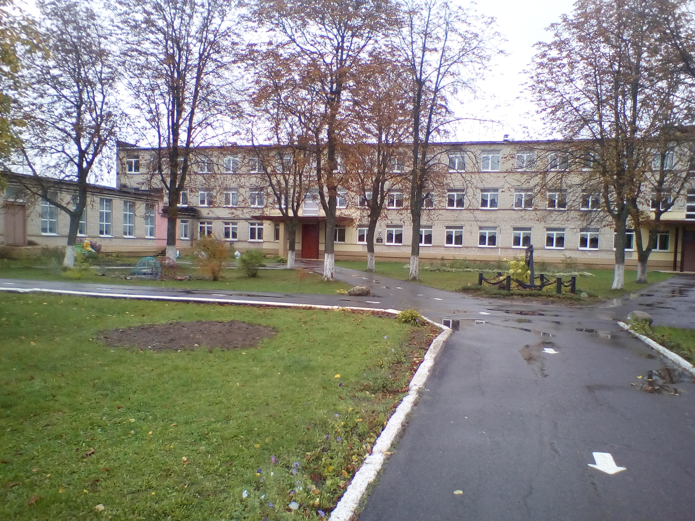

Государственное учреждение образования «Средняя школа № 9 г. Речицы»
Основные сведения
Тип учреждения: Учреждение общего среднего образования
Населенный пункт: Речица
Контактная информация
Адрес:
247500, Гомельская область, Речицкий район
г. Речица, ул. Куйбышева, д. 5а
Телефон: +375 2340 3 26 88
Факс: +375 2340 3 26 88
E-mail: shkola9@rechitsa-edu.gov.by
Режим работы
Понедельник – суббота: 08:00 – 20:00
Предпраздничные дни: 08:00 – 20:00
Руководство
Должность
Фамилия, имя, отчество
Директор школы
Молчанова Юлия Вадимовна
Предварительная запись на личный прием осуществляется по телефону 8 (02340) 3 26 88 (приемная).
Об учреждении

Основными задачами ГУО «Средняя школа № 9 г. Речицы» являются:
Обеспечивать качество образования путем повышения качества проведения учебных занятий, факультативных занятий, занятий объединений по интересам посредством реализации современных дидактических подходов в обучении, воспитательного потенциала учебных предметов.
Использовать инновационные и информационно-коммуникационные технологии.
Организовать эффективную допрофильную и профессиональную подготовку учащихся на ІІ и ІІІ ступенях образования.
Продолжить работу по формированию культуры здоровья учащихся, безопасному и ответственному поведению, предупреждению травматизма.
Усилить работу по предупреждению противоправной деятельности среди несовершеннолетних, способствовать формированию у учащихся правовой компетентности и правового самосознания.
Создать условия для самореализации и самоопределения личности путем использования эффективных форм и методов в тесном взаимодействии с семьей, реализуя Программу воспитания детей и молодежи.
Улучшить оснащенность учебных кабинетов техническими средствами обучения для расширения возможностей использования информационно-коммуникационных технологий в образовательном процессе.